Algoritmi di ordinamento
gli algoritmi di ordinamento hanno un insieme di n numeri in input e in output devono stamparli in ordine crescente quindi dove ogni numero precedente deve essere più piccolo del successivo 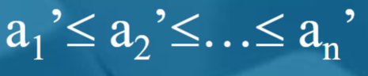
Algoritmo 1 Selection Sort
- Algoritmo semplice da applicare ma poco efficiente
Come funziona?
Ci scorriamo il nostro array e ad ogni elemento facciamo un controllo su qual è l’elemento più piccolo in quella determinata posizione
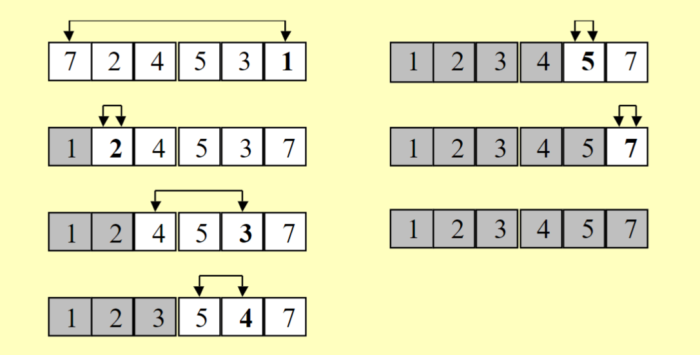

PSEUDOCODICE
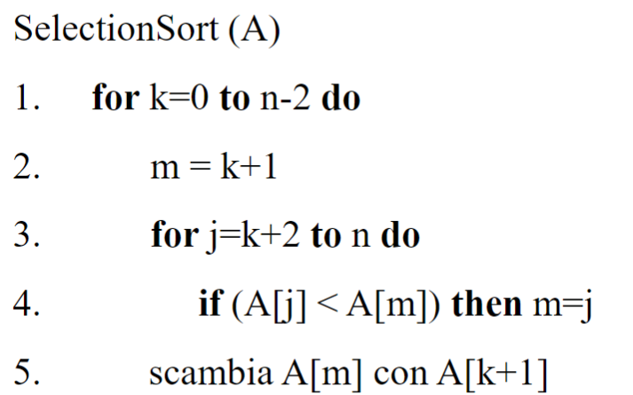
- Il primo ciclo for scorrerà tutto l’array partendo da una posizione definita
- Ad ogni posizione del primo ciclo for faremo un confronto tra tutti i successivi dettati da
je li confrontiamo con la posizione m, se troviamo un numero più piccolo di quello in posizione m la nuova m diventerà la posizione che abbiamo trovato essere la più piccola - la m sostanzialmente indica lo smallest e la k del for iniziale i round(vedi gif sopra)
- sostituirà la posizione del più piccolo di quel momento con la posizione del successivo, quindi
- piccola precisazione, per il prof la posizione 0 non si scambia.
- n-2 alla condizione del primo for perché controllare l’ultima posizione è inutile
Parentesi sulle invarianti
le invarianti sono delle proprietà che devono rimanere immutate nella fase di esecuzione dell’algoritmo e che ci servono per capire se un algoritmo è corretto perché permette di isolare proprietà dell’algoritmo, spiegarne il funzionamento, capire a fondo l’idea su cui si basa. in questo caso abbiamo due invarianti definite su un generico passo k:
- i precedenti di sono già ordinati
- i precedenti di sono gli elementi più piccoli dell’array
Complessità temporale del seguente algoritmo
Vedremo solo upper-bound e lower-bound
Nel caso di upper-bound
- il for sopra lo facciamo al più n volte
- e quello dentro anche al più n volte in modo molto approssimato per il nostro modello RAM ogni riga di codice ci costa tempo costante noi avremo quindi 5 righe di codice che saranno eseguite al più volte 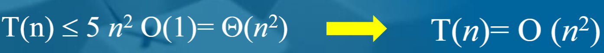
caso lower-bound
prendiamo per fare il lower-bound la parte che ci esegue più operazioni
- ovviamente è il for interno per calcolare il numero di passaggi dentro a quel for faremo una sommatoria che va da k=0 a n-2 ovvero il numero dei passaggi del for superiore, successivamente so che il primo elemento dell’array non viene confrontato quindi ho n-1 confronti quindi so che il ciclo for dentro è ma visto che il nostro array lo prendiamo come se partisse da 1 sommiamo 1 e quindi avremmo 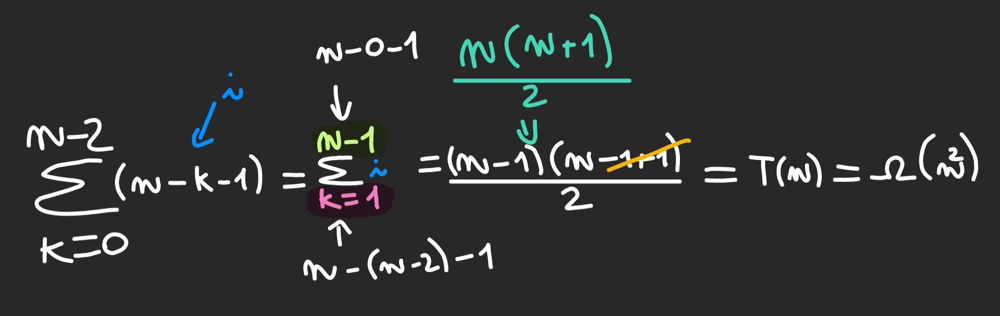
quindi abbiamo in tutto
Algoritmo 2 Insertion Sort
- Algoritmo simile al precedente funziona tipo con le carte
Come funziona?
Si scorre l’array fino a n-1 confrontando l’elemento nella posizione corrente con i precedenti finché non trova un punto in cui risulta maggiore del precedente controllato 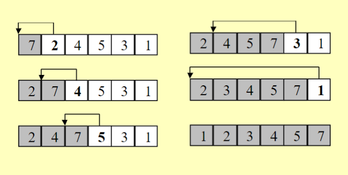

PSEUDOCODICE
Complessità temporale del seguente algoritmo
Algoritmo 3 Bubble Sort
- gli elementi più grandi vengono spinti verso destra confrontando gli elementi adiacenti tra loro
Come funziona?
Si scorre l’array n-1 volte per un numero di i volte, dovuto al fatto che dobbiamo ogni volta scorrere il nostro array diverse volte, ad ogni posizione nell’array confrontiamo il numero di quella posizione con il numero nella posizione precedente, e andiamo avanti così finché l’array non è ordinato
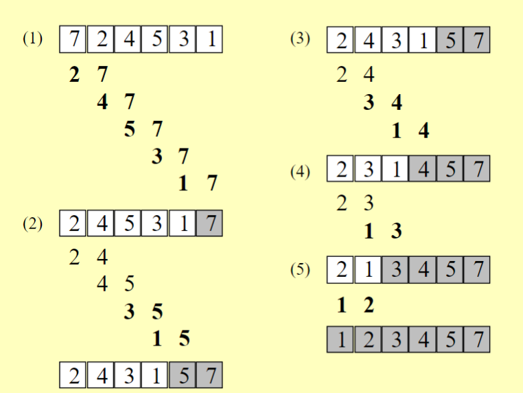

PSEUDOCODICE
Complessità temporale del seguente algoritmo
Algoritmi sotto il quadrato
Algoritmo 4 Merge Sort
- Il merge sort è un algoritmo che applica il divide et impera e ha un costo più basso degli altri
Come funziona?
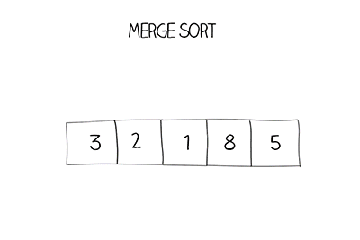
PSEUDO-CODICE
MergeSort(A, i, f)
1. if(i < f) then
2. m = PARTE_INFERIORE[(i + f) / 2]
3. MergeSort(A, i, m)
4. MergeSort(A, m+1, f)
5. Merge(A, i, m, f)
6. if(i = f) then return A[i] -
se gli indici
inizio < fineentro nell’IF -
trovo la metà
-
calcolo ricorsivamente il
MergeSortdella prima metà- fintanto che
i < f(quindi fino a quando non ho UN SINGOLO ELEMENTO DA PASSARE ALMERGESORT) calcolo ricorsivamente; - quando ho un singolo elemento vuol dire
i = f, quindi ritorno quel valore - a questo punto ho i risultati della riga 3 e 4 del penultimo MergeSort chiamato
- ripercorro tutto tornando sopra e avrò il risultato finale della riga 3 chiamata la prima volta (in pratica ho la prima metà ordinata)
- fintanto che
-
calcolo ricorsivamente il MergeSort della seconda metà
- rifaccio la stessa cosa che ho scritto nel punto 3
-
QUANDO HO IL RISULTATO DEL PUNTO 3 E 4 posso eseguire il merge.
Algoritmo 4.5 Merge
- Il merge è quell’algoritmo che ci consente di fondere due array A e B e che sono entrambi ordinati singolarmente
Come funziona?
- estrai ripetutamente il minimo di A e B e copialo nell’array di output, finché A oppure B non diventa vuoto
- copia gli elementi dell’array non vuoto alla fine dell’array di output
 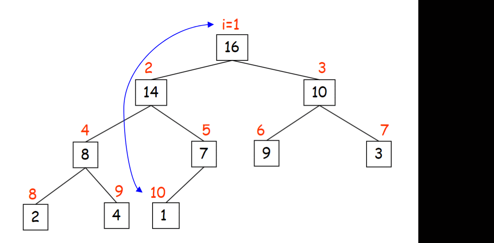
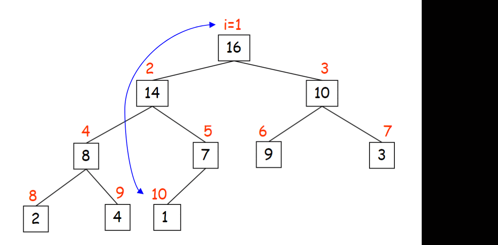
PSEUDOCODICE
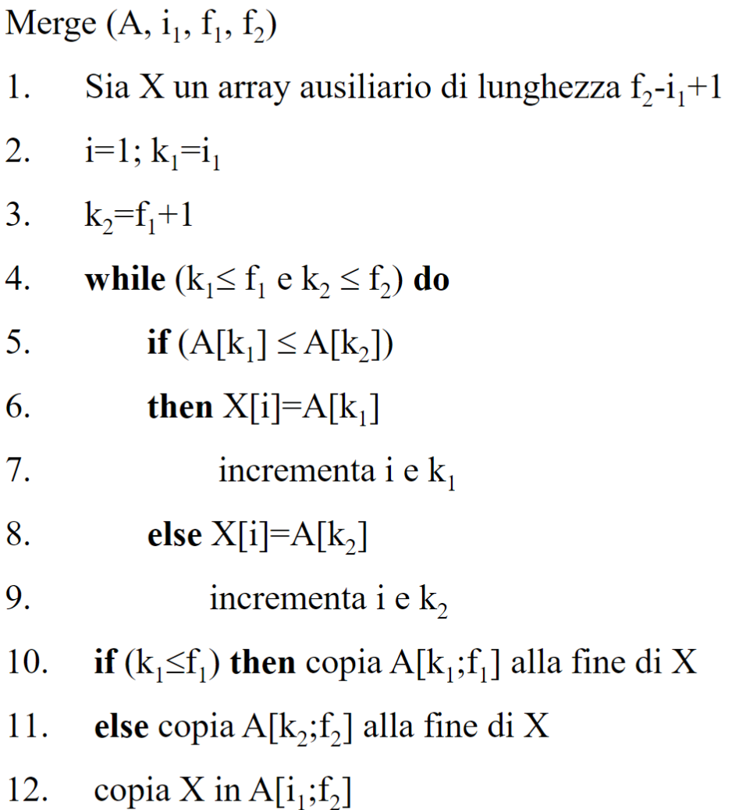
- La funzione Merge prende come argomento
- l’array()
- la posizione iniziale()
- la posizione al centro()
- la posizione finale()
- crea un array lungo quanto la posizione
- è uguale a perché alcune volte lo pseudo codice si fa con array che partono da
- prende il valore iniziale prende il valore dell’inizio della seconda parte dell’array
- inseriamo gli elementi dei vari array scambiando in base alla necessità quale prendere in considerazione dei due per l’inserimento
- ad ogni assegnazione nell’array incremento e se uso l’array1 oppure se uso array2
- se alla fine del for deve ancora finire di inserirsi del tutto metterò per completezza gli ultimi elementi alla fine dell’array, oppure copio gli ultimi elementi di
- mettiamo x nelle posizioni dell’array che avevamo
- fine.
Complessità temporale del Merge
Ogni passaggio costa un elemento delle due sequenze che abbiamo che saranno rispettivamente lunghe e l’altra , visto che ogni passaggio costa un elemento delle due avremmo sicuramente il while che costa tutto e un po’ di oppure viceversa, poi i restanti elementi del vettore che manca da mettere dentro X saranno aggiunti con una funzione di copia che avrà tempo lineare quindi alla fine avremmo
Complessità temporale del Merge Sort
Abbiamo due chiamate ricorsive che ogni volta diminuiscono proporzionalmente di e ad ogni chiamata di funzione faremo un merge che costa perché alle ultime chiamate non facciamo esattamente n poi applichiamo il teorema master per svolgere questa equazione di ricorrenza 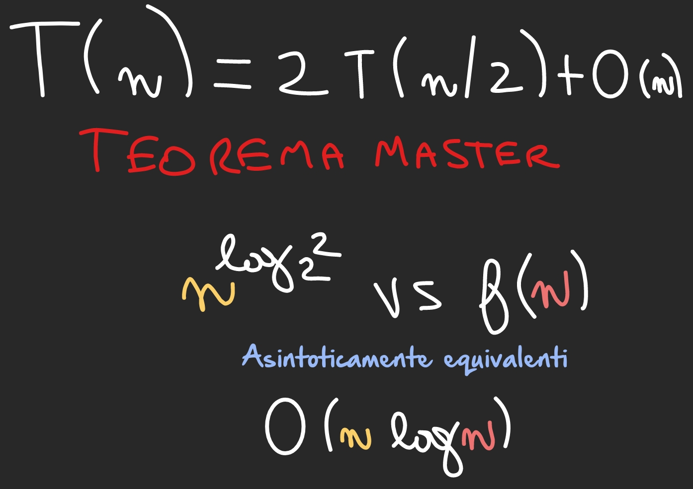
Quanta memoria (ausiliaria) usiamo?
perché l’unica cosa che occupa memoria è la creazione dell’array ausiliario ad ogni chiamata del merge, ogni chiamata del merge avviene singolarmente e non se ne eseguono più di una nello stesso tempo perciò il costo rimarrà sempre , anche se vedessimo il costo di tutte le chiamate contemporanee di merge sort avremmo dato dal , comunque è asintoticamente più lento di e quindi non lo consideriamo in memoria
Algoritmo 5 Quick Sort
- Il quick sort è un algoritmo che ha un costo sotto e che usa la tecnica del divide et impera
Come funziona?
ricorsivamente chiamo Partition dove si pone un perno e si fanno scorrere due controlli
- da sinistra verso destra dell’array controllo se il numero preso in quel momento è maggiore del perno
- da destra verso sinistra dell’array se il numero preso in quel momento è minore del perno
se si verificano quelle condizioni avviene uno scambio tra i due

Funzionamento algoritmo Partition
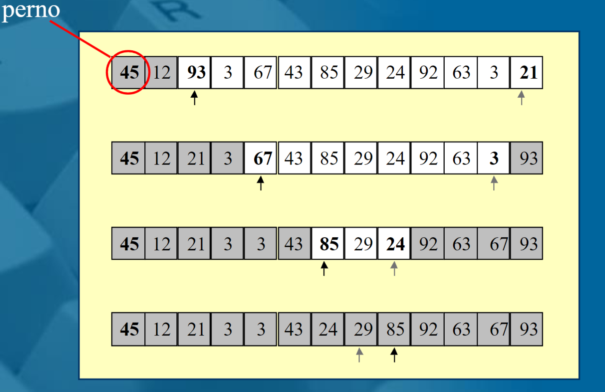
PSEUDOCODICE Partition
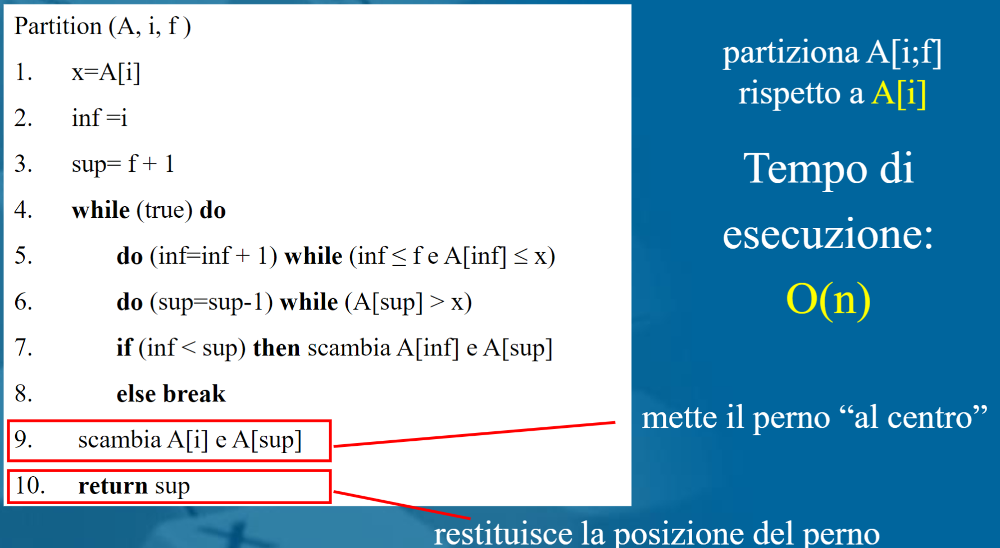
- ogni volta viene creato un perno dato dalla posizione
- la parte inferiore è data da i
- la parte superiore dalla fine +1
- facciamo un ciclo while che continua finché non si attiva il break
- abbiamo quei due cicli che dicevamo prima che scorrono da dx a sx e viceversa che si fermano se trovano una contraddizione della richiesta di una tipica lista ordinata
- ha senso il fatto che da sx verso dx cerchi il maggiore perché così se abbiamo sempre numeri minori significa che siamo su un punto già ordinato e che non dobbiamo togliere
- stessa cosa vale da dx a sx
- una volta terminato i due cicli procediamo a fare uno scambio se inf continua a essere più piccolo del sup(significa che i due non si stanno incrociando)
- se si incrociano usciamo e mettiamo il perno “al centro” ovvero il punto dove doveva stare perché sup sarà arrivato dove doveva arrivare
- restituiamo la posizione del perno
PSEUDOCODICE Quick Sort
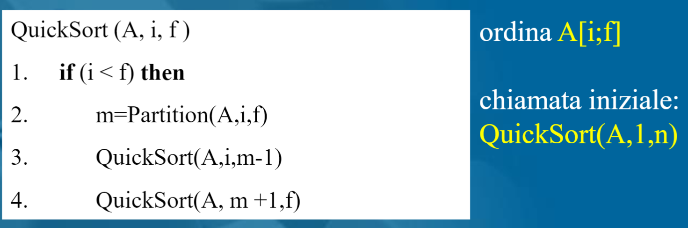
Il quicksort principalmente serve per andare a fare il partition e le varie chiamate ricorsive una a sx dell’array e una a dx, partition ogni volta inserisce nella posizione corretta il perno mettendo nell’emisfero sinistro dell’array i numeri più piccini del perno e a dx i più grandicelli
Funzionamento algoritmo Quick Sort
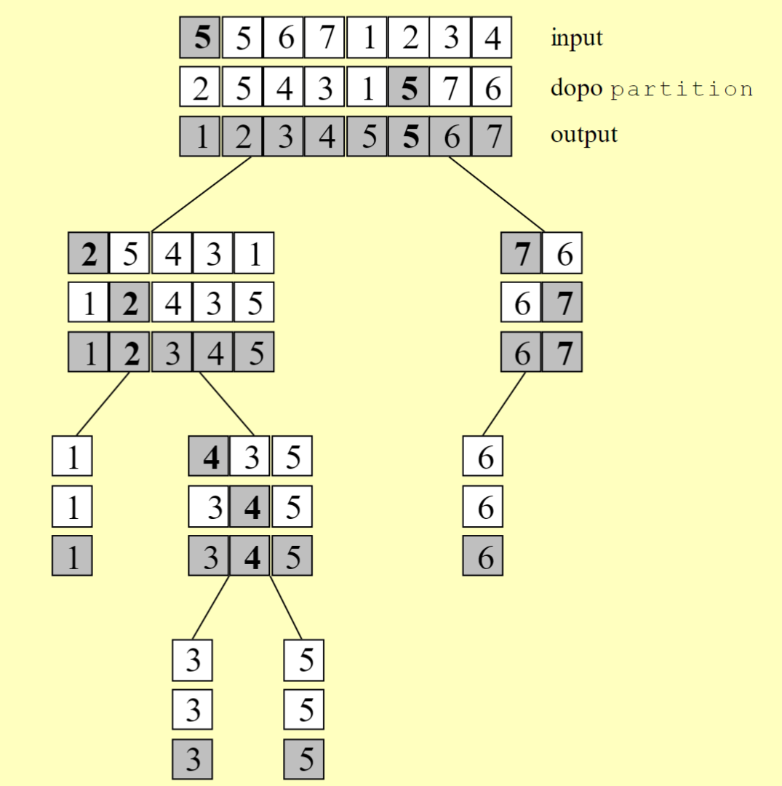
- applica il partition e ordina in base al perno facendo quella cosa sx e dx
- chiama ricorsivamente due chiamate quick una con gli elementi a sx e una con gli elementi a dx del perno
- fa la cosa ricorsivamente modificando l’array
Complessità
- Ad ogni invocazione il perno scelto in quel momento viene posizionato correttamente
- dopo n invocazioni di costo ho il vettore ordinato, se lo vedessi su un albero farei e quindi
- i due casi peggiori sono che ho il perno scelto come numero più piccolo o più grande in assoluto e quindi ho difficoltà a fare un confronto con il < o >
- quindi avrei complessità
Caso Migliore
È facile intuire che il miglioramento di costo avviene quando le partizioni sono bilanciate ovvero il perno viene posto al centro dell’array, mentre all’aumentare dello sbilanciamento il tutto si complica.
Caso Medio
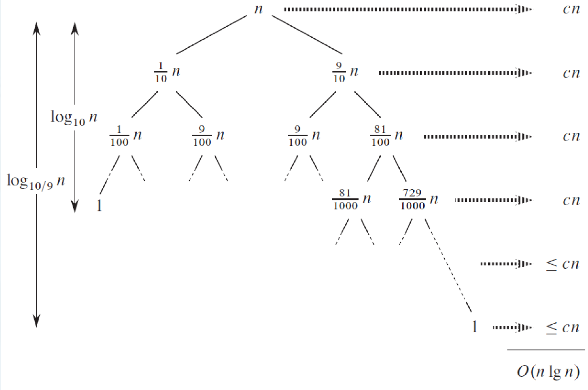 Nel caso medio si osserva che anche se il 90% degli elementi sta a sinistra del perno e il restante 10% a destra il QuickSort ha comunque un costo di Tutti i vari casi medi dello stesso problema avranno la medesima altezza dell’albero.
quicksort randomizzato
- Scegli un perno a caso
- il costi non cambiano
- ma il caso medio non esiste 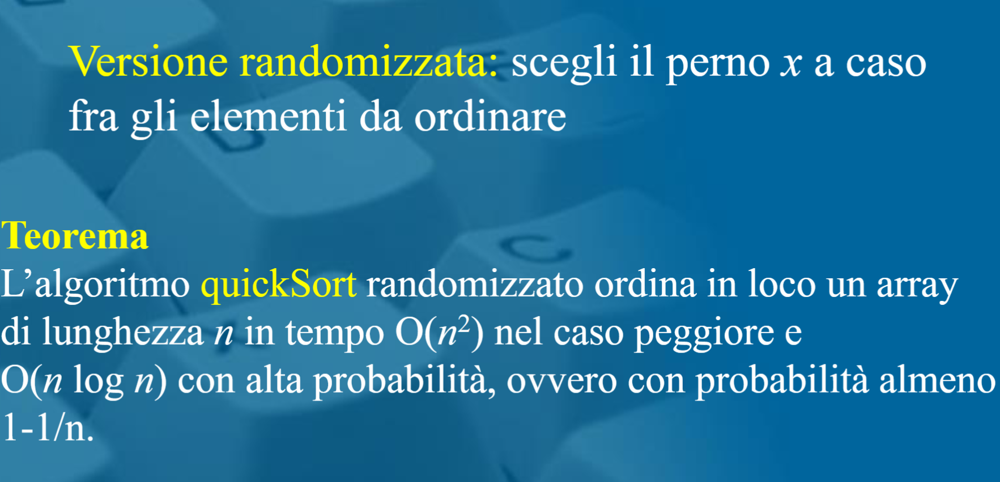